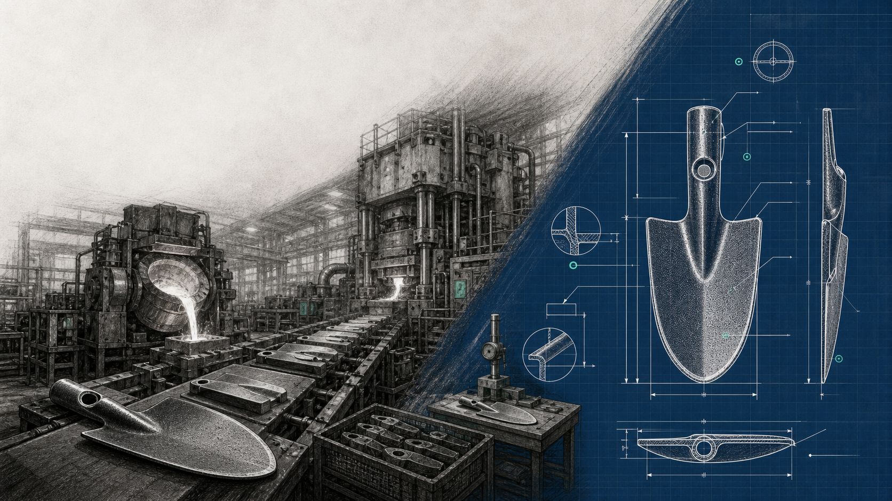

Taiwanese heritage · Global OEM partner
Made behind the brands.
Birdland has manufactured garden and field tools for export partners since 1974. Our role is to make, control and carry a programme forward behind the customer's brand — not to turn manufacturing access into a competing retail business.

Discretion in partnership.
Half a century behind other people's brands.
Your market remains yours.
The commercial boundary is the whole product. Everything on the left stays with the customer; everything on the right is what Birdland is accountable for.
Customer owns
The market relationship
- Brand identity and customer relationship
- Product specification and commercial positioning
- Pricing, channel and programme decisions
- Approval of confidential drawings and programme detail
Birdland controls
The manufacturing work
- Material, tooling and production process
- Quality gates and manufacturing execution
- Origin and continuity options for discussion
- Export hand-off and documented production workflow